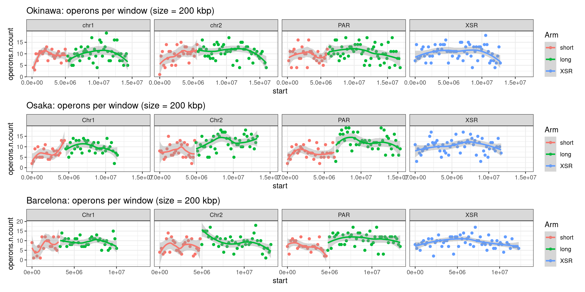
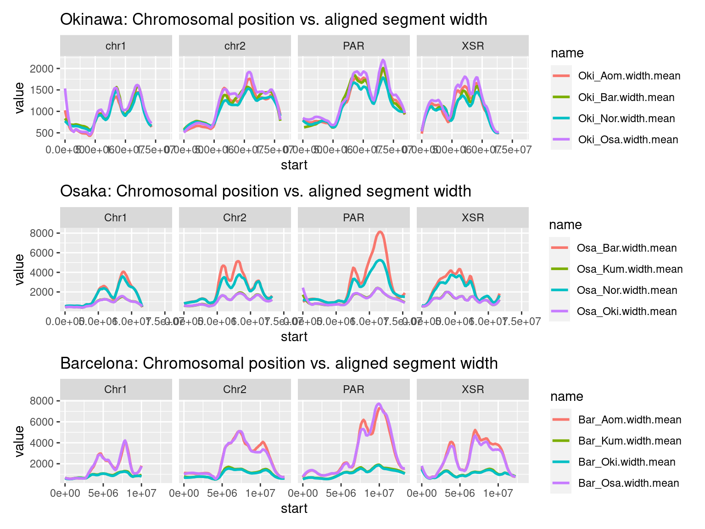

Chromosome-scale feature density plots
Michael Mansfield
Charles Plessy
25 May, 2022
Source:vignettes/ChromosomePlots.Rmd
ChromosomePlots.Rmd
knitr::opts_chunk$set(cache = TRUE)Introduction
In this vignette, we develop some of the materials needed to produce plots that summarize genomic data at chromosome-scale.
The core functions used here are maintained in our GenomicBreaks R package, which is fully documented at: https://oist.github.io/GenomicBreaks.
Load R packages and data
library('OikScrambling') |> suppressPackageStartupMessages()
library('viridis') |> suppressPackageStartupMessages()
library('dplyr') |> suppressPackageStartupMessages()
genomes <- OikScrambling:::loadAllGenomes()
transcripts <- OikScrambling:::loadAllTranscriptsGR()
reps <- OikScrambling:::loadAllRepeats()
load("BreakPoints.Rdata")Creating chromosome-scale plots
In this vignette, we create the plumbing needed to generate summary plots that show windows of genomic features on a chromosome scale.
Summarizing genomic windows of annotated GRanges objects
Below, I create some of the functions needed to produce these plots.
# Make a BSgenome into a GRanges object, one range per chromosome
BSgenomeToGR <- function(genome) {
as(seqinfo(genome), "GRanges")
}
(tmp <- genomes$Oki |> BSgenomeToGR())## GRanges object with 19 ranges and 0 metadata columns:
## seqnames ranges strand
## <Rle> <IRanges> <Rle>
## chr1 chr1 1-14533022 *
## chr2 chr2 1-16158756 *
## chrUn_1 chrUn_1 1-11000 *
## chrUn_2 chrUn_2 1-57957 *
## chrUn_3 chrUn_3 1-131584 *
## ... ... ... ...
## chrUn_13 chrUn_13 1-5739 *
## chrUn_14 chrUn_14 1-2887 *
## PAR PAR 1-17092476 *
## XSR XSR 1-12959145 *
## YSR YSR 1-2916375 *
## -------
## seqinfo: 19 sequences from OKI2018.I69 genome
# Make a genome into a bunch of windows of length N
genomeGRToWindows <- function(gr, windowSize=10000) {
tile(gr, w=windowSize) |> unlist() |> unname()
}
(tmp <- genomes$Oki |> BSgenomeToGR() |> genomeGRToWindows())## GRanges object with 6437 ranges and 0 metadata columns:
## seqnames ranges strand
## <Rle> <IRanges> <Rle>
## [1] chr1 1-9995 *
## [2] chr1 9996-19990 *
## [3] chr1 19991-29985 *
## [4] chr1 29986-39980 *
## [5] chr1 39981-49976 *
## ... ... ... ...
## [6433] YSR 2866438-2876424 *
## [6434] YSR 2876425-2886412 *
## [6435] YSR 2886413-2896399 *
## [6436] YSR 2896400-2906387 *
## [6437] YSR 2906388-2916375 *
## -------
## seqinfo: 19 sequences from an unspecified genome; no seqlengths
# Match ranges to a single bin by reducing each range to its center.
# Returns the index of the matched bins
matchToOneBin <- function(ranges, bins) {
# Ensure that a range overlaps with only one bin
safeRanges <- ranges |> resize(1, fix="center")
o <- findOverlaps(safeRanges, bins, type = 'within')
subjectHits(o)
}
(matchToOneBin(transcripts$Oki, tmp)) |> head()## [1] 19 22 23 24 26 27
# Apply one function to data grouped by bins, and array it according to the
# original bins (that is, insert NAs for bins that contained no data).
# This function only works as intended if the bins fully tile the genome.
binApply <- function(f, bins, data, index, ...) {
res <- rep(NA, length(bins))
vals <-tapply(data, index, f, ...)
res[as.numeric(names(vals))] <- unname(vals)
res
}
(binApply(mean, tmp, transcripts$Oki$dNdS_GUIDANCE2, matchToOneBin(transcripts$Oki, tmp), na.rm = TRUE)) |> head(100)## [1] NA NA NA NA NA NA NA NA
## [9] NA NA NA NA NA NA NaN NA
## [17] NA NA NaN NaN NA NaN NaN NaN
## [25] NaN NaN NaN NaN NaN NaN NaN NaN
## [33] NaN NaN NaN NaN NaN NaN NaN NaN
## [41] NaN NaN NA NaN NaN NaN NA NaN
## [49] NaN NaN NaN NaN NaN NaN NaN NaN
## [57] NaN 0.012050 NaN NaN NaN NA NA NaN
## [65] NaN 0.033770 NaN NaN NaN NaN 0.005020 0.023600
## [73] NaN 0.035260 0.021470 0.023170 0.064320 0.034810 NaN NaN
## [81] 0.064100 NaN 0.035005 NaN NaN 0.009240 NA NaN
## [89] 0.018220 0.034370 NaN NaN 0.039270 NaN NaN NaN
## [97] 0.055030 0.010370 NaN 0.072860
# Intersect each genome window with some other GRange (meta, as in metadata)
metaPerWindow <- function(genomeWindows, meta, meta_prefix=NULL) {
idx <- matchToOneBin(meta, genomeWindows)
for (name in colnames(mcols(meta))) {
data <- mcols(meta)[[name]]
if(is.numeric(data)) {
mcols(genomeWindows)[[paste0(meta_prefix, name, ".count")]] <- binApply(length, genomeWindows, data, idx)
mcols(genomeWindows)[[paste0(meta_prefix, name, ".median")]] <- binApply(median, genomeWindows, data, idx, na.rm = TRUE)
mcols(genomeWindows)[[paste0(meta_prefix, name, ".mean")]] <- binApply(mean, genomeWindows, data, idx, na.rm = TRUE)
mcols(genomeWindows)[[paste0(meta_prefix, name, ".sd")]] <- binApply(sd, genomeWindows, data, idx, na.rm = TRUE)
} else if(is.character(data) ) {
mcols(genomeWindows)[[paste0(meta_prefix, name, ".count")]] <- binApply(length, genomeWindows, data, idx)
} else if(is.factor(data)) {
mcols(genomeWindows)[[paste0(meta_prefix, name, ".count.total")]] <- binApply(length, genomeWindows, data, idx)
if(length(levels(data)) > 1) {
binned_list_of_tables <- binApply(table, genomeWindows, data, idx)
binned_DataFrame <- do.call(rbind, binned_list_of_tables) |> DataFrame()
colnames(binned_DataFrame) <- paste0(meta_prefix, name, ".", colnames(binned_DataFrame), ".count.total")
mcols(genomeWindows) <- cbind(mcols(genomeWindows), binned_DataFrame)
}
}
}
genomeWindows
}
(metaPerWindow(genomeWindows=tmp, transcripts$Oki, meta_prefix = 'transcripts.'))## GRanges object with 6437 ranges and 17 metadata columns:
## seqnames ranges strand | transcripts.tx_id.count
## <Rle> <IRanges> <Rle> | <integer>
## [1] chr1 1-9995 * | <NA>
## [2] chr1 9996-19990 * | <NA>
## [3] chr1 19991-29985 * | <NA>
## [4] chr1 29986-39980 * | <NA>
## [5] chr1 39981-49976 * | <NA>
## ... ... ... ... . ...
## [6433] YSR 2866438-2876424 * | <NA>
## [6434] YSR 2876425-2886412 * | <NA>
## [6435] YSR 2886413-2896399 * | <NA>
## [6436] YSR 2896400-2906387 * | <NA>
## [6437] YSR 2906388-2916375 * | <NA>
## transcripts.tx_id.median transcripts.tx_id.mean transcripts.tx_id.sd
## <numeric> <numeric> <numeric>
## [1] NA NA NA
## [2] NA NA NA
## [3] NA NA NA
## [4] NA NA NA
## [5] NA NA NA
## ... ... ... ...
## [6433] NA NA NA
## [6434] NA NA NA
## [6435] NA NA NA
## [6436] NA NA NA
## [6437] NA NA NA
## transcripts.tx_name.count transcripts.dNdS_GUIDANCE2.count
## <integer> <integer>
## [1] <NA> <NA>
## [2] <NA> <NA>
## [3] <NA> <NA>
## [4] <NA> <NA>
## [5] <NA> <NA>
## ... ... ...
## [6433] <NA> <NA>
## [6434] <NA> <NA>
## [6435] <NA> <NA>
## [6436] <NA> <NA>
## [6437] <NA> <NA>
## transcripts.dNdS_GUIDANCE2.median transcripts.dNdS_GUIDANCE2.mean
## <numeric> <numeric>
## [1] NA NA
## [2] NA NA
## [3] NA NA
## [4] NA NA
## [5] NA NA
## ... ... ...
## [6433] NA NA
## [6434] NA NA
## [6435] NA NA
## [6436] NA NA
## [6437] NA NA
## transcripts.dNdS_GUIDANCE2.sd transcripts.dNdS_HmmCleaner.count
## <numeric> <integer>
## [1] NA <NA>
## [2] NA <NA>
## [3] NA <NA>
## [4] NA <NA>
## [5] NA <NA>
## ... ... ...
## [6433] NA <NA>
## [6434] NA <NA>
## [6435] NA <NA>
## [6436] NA <NA>
## [6437] NA <NA>
## transcripts.dNdS_HmmCleaner.median transcripts.dNdS_HmmCleaner.mean
## <numeric> <numeric>
## [1] NA NA
## [2] NA NA
## [3] NA NA
## [4] NA NA
## [5] NA NA
## ... ... ...
## [6433] NA NA
## [6434] NA NA
## [6435] NA NA
## [6436] NA NA
## [6437] NA NA
## transcripts.dNdS_HmmCleaner.sd transcripts.dNdS_PRANK.count
## <numeric> <integer>
## [1] NA <NA>
## [2] NA <NA>
## [3] NA <NA>
## [4] NA <NA>
## [5] NA <NA>
## ... ... ...
## [6433] NA <NA>
## [6434] NA <NA>
## [6435] NA <NA>
## [6436] NA <NA>
## [6437] NA <NA>
## transcripts.dNdS_PRANK.median transcripts.dNdS_PRANK.mean
## <numeric> <numeric>
## [1] NA NA
## [2] NA NA
## [3] NA NA
## [4] NA NA
## [5] NA NA
## ... ... ...
## [6433] NA NA
## [6434] NA NA
## [6435] NA NA
## [6436] NA NA
## [6437] NA NA
## transcripts.dNdS_PRANK.sd
## <numeric>
## [1] NA
## [2] NA
## [3] NA
## [4] NA
## [5] NA
## ... ...
## [6433] NA
## [6434] NA
## [6435] NA
## [6436] NA
## [6437] NA
## -------
## seqinfo: 19 sequences from an unspecified genome; no seqlengths
# Function to do everything
grWindows <- function(genome, meta, windowSize=10000, meta_prefix=NULL){
genome <- BSgenomeToGR(genome) # Make GRanges from genome
genome <- genomeGRToWindows(genome, windowSize=windowSize) # Make a windowed GRange from chromosome GRanges
mpw <- metaPerWindow(genome, meta, meta_prefix=meta_prefix) # Make metadata column windows and intersect
mpw
}Chromosome plots
Transcripts
In the following sections we annotate and initialize the chrw object, which is a SimpleList() containing windowed chromosome regions.
We use these windows to evaluate the distribution of various features across the chromosomes. This section concerns one-dimensional features.
windowSize <- 2e5
bins_Oki <- genomes$Oki |> BSgenomeToGR() |> genomeGRToWindows(windowSize)
bins_Osa <- genomes$Osa |> BSgenomeToGR() |> genomeGRToWindows(windowSize)
bins_Bar <- genomes$Bar |> BSgenomeToGR() |> genomeGRToWindows(windowSize)
chrw <- SimpleList()
chrw$Oki <- grWindows(genome=genomes$Oki, meta=transcripts$Oki, windowSize=windowSize, meta_prefix = 'transcripts.')
chrw$Oki <- flagLongShort(chrw$Oki, longShort$OKI2018.I69)
chrw$Osa <- grWindows(genome=genomes$Osa, meta=transcripts$Osa, windowSize=windowSize, meta_prefix = 'transcripts.')
chrw$Osa <- flagLongShort(chrw$Osa, longShort$OSKA2016v1.9)
chrw$Bar <- grWindows(genome=genomes$Bar, meta=transcripts$Bar, windowSize=windowSize, meta_prefix = 'transcripts.')
chrw$Bar <- flagLongShort(chrw$Bar, longShort$Bar2.p4)
# Density of transcript names (i.e., gene counts).
ggplot(as.data.frame(chrw$Oki) |> plyranges::filter(seqnames %in% c('chr1', 'chr2', 'PAR', 'XSR', 'YSR')) ) + aes(x=start, y=transcripts.tx_name.count) + geom_point() + facet_wrap(~seqnames) + geom_smooth() + ggtitle(paste("Okinawa: transcripts per window (size = ", windowSize/1000, " kbp)", sep="")) +
geom_vline( data = (longShort$OKI2018.I69 -1) |> GenomicBreaks::cleanGaps() |> as.data.frame()
, aes(xintercept = start), col = "gray")
ggplot(as.data.frame(chrw$Oki) |> plyranges::filter(seqnames %in% c('chr1', 'chr2', 'PAR', 'XSR', 'YSR')) ) + aes(x=start, y=transcripts.dNdS_PRANK.median) + geom_point() + facet_wrap(seqnames ~ Arm) + ggtitle(paste("Okinawa: dN/dS per window (size = ", windowSize/1000, " kbp)", sep=""))
ggplot(as.data.frame(chrw$Oki) |> plyranges::filter(seqnames %in% c('chr1', 'chr2', 'PAR', 'XSR')) ) + aes(x=start, y=transcripts.dNdS_PRANK.median, col = Arm) + geom_point() + facet_wrap(~seqnames, nrow = 1) + geom_smooth(method = 'loess', method.args = list(family = "symmetric")) + ggtitle(paste("Okinawa: dN/dS per window (size = ", windowSize/1000, " kbp)", sep=""))
# Density of transcript names (i.e., gene counts).
ggplot(as.data.frame(chrw$Osa) |> plyranges::filter(seqnames %in% c('Chr1', 'Chr2', 'PAR', 'XSR', 'YSR')) ) + aes(x=start, y=transcripts.tx_name.count) + geom_point() + facet_wrap(~seqnames) + geom_smooth() + ggtitle(paste("Osaka: transcripts per window (size = ", windowSize/1000, " kbp)", sep=""))
ggplot(as.data.frame(chrw$Osa) |> plyranges::filter(seqnames %in% c('Chr1', 'Chr2', 'PAR', 'XSR', 'YSR')) ) + aes(x=start, y=transcripts.dNdS_PRANK.median) + geom_point() + facet_wrap(seqnames ~ Arm) + ggtitle(paste("Osaka: dN/dS per window (size = ", windowSize/1000, " kbp)", sep=""))
ggplot(as.data.frame(chrw$Osa) |> plyranges::filter(seqnames %in% c('Chr1', 'Chr2', 'PAR', 'XSR', 'YSR')) ) + aes(x=start, y=transcripts.dNdS_PRANK.median) + geom_point() + facet_wrap(~seqnames) + geom_smooth() + ggtitle(paste("Osaka: dN/dS per window (size = ", windowSize/1000, " kbp)", sep="")) 
# Density of transcript names (i.e., gene counts).
ggplot(as.data.frame(chrw$Bar) |> plyranges::filter(seqnames %in% c('Chr1', 'Chr2', 'PAR', 'XSR', 'YSR')) ) + aes(x=start, y=transcripts.tx_name.count) + geom_point() + facet_wrap(~seqnames) + geom_smooth() + ggtitle(paste("Barcelona: transcripts per window (size = ", windowSize/1000, " kbp)", sep=""))
ggplot(as.data.frame(chrw$Bar) |> plyranges::filter(seqnames %in% c('Chr1', 'Chr2', 'PAR', 'XSR', 'YSR')) ) + aes(x=start, y=transcripts.dNdS_PRANK.median) + geom_point() + facet_wrap(seqnames ~ Arm) + ggtitle(paste("Barcelona: dN/dS per window (size = ", windowSize/1000, " kbp)", sep=""))
ggplot(as.data.frame(chrw$Bar) |> plyranges::filter(seqnames %in% c('Chr1', 'Chr2', 'PAR', 'XSR', 'YSR')) ) + aes(x=start, y=transcripts.dNdS_PRANK.median) + geom_point() + facet_wrap(~seqnames) + geom_smooth() + ggtitle(paste("Barcelona: dN/dS per window (size = ", windowSize/1000, " kbp)", sep=""))
Transcripts: joined gene density plot
# Okinawa
p1 <- ggplot(as.data.frame(chrw$Oki) |> plyranges::filter(seqnames %in% c('chr1', 'chr2', 'PAR', 'XSR')) ) + aes(x=start, y=transcripts.tx_id.count, col = Arm) + geom_point() + facet_wrap(~seqnames, nrow = 1) + geom_smooth(method = 'loess', method.args = list(family = "symmetric")) + ggtitle(paste("Okinawa: genes per window (size = ", windowSize/1000, " kbp)", sep="")) + ylab('transcripts')
# Osaka
p2 <- ggplot(as.data.frame(chrw$Osa) |> plyranges::filter(seqnames %in% c('Chr1', 'Chr2', 'PAR', 'XSR')) ) + aes(x=start, y=transcripts.tx_id.count, col = Arm) + geom_point() + facet_wrap(~seqnames, nrow = 1) + geom_smooth(method = 'loess', method.args = list(family = "symmetric")) + ggtitle(paste("Osaka: genes per window (size = ", windowSize/1000, " kbp)", sep="")) + ylab('transcripts')
# Barcelona
p3 <- ggplot(as.data.frame(chrw$Bar) |> plyranges::filter(seqnames %in% c('Chr1', 'Chr2', 'PAR', 'XSR')) ) + aes(x=start, y=transcripts.tx_id.count, col = Arm) + geom_point() + facet_wrap(~seqnames, nrow = 1) + geom_smooth(method = 'loess', method.args = list(family = "symmetric")) + ggtitle(paste("Barcelona: genes per window (size = ", windowSize/1000, " kbp)", sep="")) + ylab('transcripts')
ggpubr::ggarrange(p1, p2, p3, ncol=1)Transcripts: joined dN/dS plot
p1 <- ggplot(as.data.frame(chrw$Oki) |> plyranges::filter(seqnames %in% c('chr1', 'chr2', 'PAR', 'XSR')) ) + aes(x=start, y=transcripts.dNdS_PRANK.median, col = Arm) + geom_point() + facet_wrap(~seqnames, nrow = 1) + geom_smooth(method = 'loess', method.args = list(family = "symmetric")) + ggtitle(paste("Okinawa: dN/dS per window (size = ", windowSize/1000, " kbp)", sep="")) + ylab("dN/dS")
p2 <- ggplot(as.data.frame(chrw$Osa) |> plyranges::filter(seqnames %in% c('Chr1', 'Chr2', 'PAR', 'XSR')) ) + aes(x=start, y=transcripts.dNdS_PRANK.median, col = Arm) + geom_point() + facet_wrap(~seqnames, nrow = 1) + geom_smooth(method = 'loess', method.args = list(family = "symmetric")) + ggtitle(paste("Osaka: dN/dS per window (size = ", windowSize/1000, " kbp)", sep="")) + ylab("dN/dS")
p3 <- ggplot(as.data.frame(chrw$Bar) |> plyranges::filter(seqnames %in% c('Chr1', 'Chr2', 'PAR', 'XSR')) ) + aes(x=start, y=transcripts.dNdS_PRANK.median, col = Arm) + geom_point() + facet_wrap(~seqnames, nrow = 1) + geom_smooth(method = 'loess', method.args = list(family = "symmetric")) + ggtitle(paste("Barcelona: dN/dS per window (size = ", windowSize/1000, " kbp)", sep="")) + ylab("dN/dS")
ggpubr::ggarrange(p1, p2, p3, ncol=1)
Operons
In this section we add operon data to the chrw object. Since the windows are the same for every genome, this is simple accomplished with a cbind operation to the windowed object’s mcols.
# Since the coordinates of the windows are the same, you can simply cbind more metadata columns to the data frame.
mcols(chrw$Oki) <- cbind(mcols(chrw$Oki), mcols(grWindows(genome=genomes$Oki, meta=OikScrambling:::calcOperons(transcripts$Oki), windowSize=windowSize, meta_prefix = 'operons.')))
mcols(chrw$Osa) <- cbind(mcols(chrw$Osa), mcols(grWindows(genome=genomes$Osa, meta=OikScrambling:::calcOperons(transcripts$Osa), windowSize=windowSize, meta_prefix = 'operons.')))
mcols(chrw$Bar) <- cbind(mcols(chrw$Bar), mcols(grWindows(genome=genomes$Bar, meta=OikScrambling:::calcOperons(transcripts$Bar), windowSize=windowSize, meta_prefix = 'operons.')))
ggplot(as.data.frame(chrw$Oki) |> plyranges::filter(seqnames %in% c('chr1', 'chr2', 'PAR', 'XSR', 'YSR')) ) + aes(x=start, y=operons.n.count) + geom_point() + facet_wrap(~seqnames) + geom_smooth() + ggtitle(paste("Okinawa: operons per window (size = ", windowSize/1000, " kbp)", sep="")) +
geom_vline( data = (longShort$OKI2018.I69 -1) |> GenomicBreaks::cleanGaps() |> as.data.frame()
, aes(xintercept = start), col = "gray")
ggplot(as.data.frame(chrw$Oki) |> plyranges::filter(seqnames %in% c('chr1', 'chr2', 'PAR', 'XSR')) ) + aes(x=start, y=operons.n.count, col = Arm) + geom_point() + facet_wrap(~seqnames, nrow = 1) + geom_smooth(method = 'loess', method.args = list(family = "symmetric")) + ggtitle(paste("Okinawa: operons per window (size = ", windowSize/1000, " kbp)", sep=""))
ggplot(as.data.frame(chrw$Osa) |> plyranges::filter(seqnames %in% c('Chr1', 'Chr2', 'PAR', 'XSR', 'YSR')) ) + aes(x=start, y=operons.n.count) + geom_point() + facet_wrap(~seqnames) + geom_smooth() + ggtitle(paste("Osaka: transcripts per window (size = ", windowSize/1000, " kbp)", sep=""))
ggplot(as.data.frame(chrw$Osa) |> plyranges::filter(seqnames %in% c('Chr1', 'Chr2', 'PAR', 'XSR')) ) + aes(x=start, y=operons.n.count, col = Arm) + geom_point() + facet_wrap(~seqnames, nrow = 1) + geom_smooth(method = 'loess', method.args = list(family = "symmetric")) + ggtitle(paste("Osaka: operons per window (size = ", windowSize/1000, " kbp)", sep=""))
ggplot(as.data.frame(chrw$Bar) |> plyranges::filter(seqnames %in% c('Chr1', 'Chr2', 'PAR', 'XSR', 'YSR')) ) + aes(x=start, y=operons.n.count) + geom_point() + facet_wrap(~seqnames) + geom_smooth() + ggtitle(paste("Barcelona: operons per window (size = ", windowSize/1000, " kbp)", sep=""))
ggplot(as.data.frame(chrw$Bar) |> plyranges::filter(seqnames %in% c('Chr1', 'Chr2', 'PAR', 'XSR')) ) + aes(x=start, y=operons.n.count, col = Arm) + geom_point() + facet_wrap(~seqnames, nrow = 1) + geom_smooth(method = 'loess', method.args = list(family = "symmetric")) + ggtitle(paste("Barcelona: operons per window (size = ", windowSize/1000, " kbp)", sep=""))
Operons: joined operon density plot
# Okinawa
p1 <- ggplot(as.data.frame(chrw$Oki) |> plyranges::filter(seqnames %in% c('chr1', 'chr2', 'PAR', 'XSR')) ) + aes(x=start, y=operons.n.count, col = Arm) + geom_point() + facet_wrap(~seqnames, nrow = 1) + geom_smooth(method = 'loess', method.args = list(family = "symmetric")) + ggtitle(paste("Okinawa: operons per window (size = ", windowSize/1000, " kbp)", sep="")) + ylab('operons')
# Osaka
p2 <- ggplot(as.data.frame(chrw$Osa) |> plyranges::filter(seqnames %in% c('Chr1', 'Chr2', 'PAR', 'XSR')) ) + aes(x=start, y=operons.n.count, col = Arm) + geom_point() + facet_wrap(~seqnames, nrow = 1) + geom_smooth(method = 'loess', method.args = list(family = "symmetric")) + ggtitle(paste("Osaka: operons per window (size = ", windowSize/1000, " kbp)", sep="")) + ylab('operons')
# Barcelona
p3 <- ggplot(as.data.frame(chrw$Bar) |> plyranges::filter(seqnames %in% c('Chr1', 'Chr2', 'PAR', 'XSR')) ) + aes(x=start, y=operons.n.count, col = Arm) + geom_point() + facet_wrap(~seqnames, nrow = 1) + geom_smooth(method = 'loess', method.args = list(family = "symmetric")) + ggtitle(paste("Barcelona: operons per window (size = ", windowSize/1000, " kbp)", sep="")) + ylab('operons')
ggpubr::ggarrange(p1, p2, p3, ncol=1)
Repeats
Like operons, it is simple to add repeat density, since the X coordinates (start and end positions of a GRanges are shared).
mcols(chrw$Oki) <- cbind(mcols(chrw$Oki), mcols(grWindows(genome=genomes$Oki, meta=reps$Oki, windowSize=windowSize, meta_prefix = 'repeats.')))
mcols(chrw$Osa) <- cbind(mcols(chrw$Osa), mcols(grWindows(genome=genomes$Osa, meta=reps$Osa, windowSize=windowSize, meta_prefix = 'repeats.')))
mcols(chrw$Bar) <- cbind(mcols(chrw$Bar), mcols(grWindows(genome=genomes$Bar, meta=reps$Bar, windowSize=windowSize, meta_prefix = 'repeats.')))
ggplot(as.data.frame(chrw$Oki) |> plyranges::filter(seqnames %in% c('chr1', 'chr2', 'PAR', 'XSR', 'YSR')) ) + aes(x=start, y=repeats.Class.count.total) + geom_point() + facet_wrap(seqnames~Arm) + geom_smooth() + scale_y_log10()
ggplot(as.data.frame(chrw$Osa) |> plyranges::filter(seqnames %in% c('Chr1', 'Chr2', 'PAR', 'XSR', 'YSR')) ) + aes(x=start, y=repeats.Class.count.total) + geom_point() + facet_wrap(seqnames~Arm) + geom_smooth() + scale_y_log10()
ggplot(as.data.frame(chrw$Bar) |> plyranges::filter(seqnames %in% c('Chr1', 'Chr2', 'PAR', 'XSR', 'YSR')) ) + aes(x=start, y=repeats.Class.count.total) + geom_point() + facet_wrap(seqnames~Arm) + geom_smooth() + scale_y_log10()
We can use the [mcol].counts.tables metadata columns to calculate statistics between different genomic regions.
chrw$Oki |>
as.data.frame() |>
subset(select=c("seqnames", "start", "end", "repeats.Class.count.total", "repeats.Class.LowComplexity.count.total", "repeats.Class.ltr.1.count.total", "repeats.Class.rnd.count.total", "repeats.Class.SINE.count.total", "repeats.Class.tandem.count.total", "repeats.Class.unknown.count.total" )) |>
plyranges::filter(seqnames %in% c('chr1', 'chr2', 'PAR', 'XSR')) |>
tidyr::pivot_longer(c("repeats.Class.count.total", "repeats.Class.LowComplexity.count.total", "repeats.Class.ltr.1.count.total", "repeats.Class.rnd.count.total", "repeats.Class.SINE.count.total", "repeats.Class.tandem.count.total", "repeats.Class.unknown.count.total")) |>
ggplot() +
aes(start, value, col = name) +
facet_wrap(~seqnames, nrow = 1) +
geom_smooth(span = 0.25, se = FALSE) +
ggtitle("Oki: distribution of repeat classes across genome")
chrw$Osa |>
as.data.frame() |>
subset(select=c("seqnames", "start", "end", "repeats.Class.count.total", "repeats.Class.LowComplexity.count.total", "repeats.Class.rnd.count.total", "repeats.Class.tandem.count.total", "repeats.Class.unknown.count.total" )) |>
plyranges::filter(seqnames %in% c('Chr1', 'Chr2', 'PAR', 'XSR')) |>
tidyr::pivot_longer(c("repeats.Class.count.total", "repeats.Class.LowComplexity.count.total", "repeats.Class.rnd.count.total", "repeats.Class.tandem.count.total", "repeats.Class.unknown.count.total" )) |>
ggplot() +
aes(start, value, col = name) +
facet_wrap(~seqnames, nrow = 1) +
geom_smooth(span = 0.25, se = FALSE) +
ggtitle("Osa: distribution of repeat classes across genome")
chrw$Bar |>
as.data.frame() |>
subset(select=c("seqnames", "start", "end", "repeats.Class.count.total", "repeats.Class.LowComplexity.count.total", "repeats.Class.rnd.count.total", "repeats.Class.tandem.count.total", "repeats.Class.unknown.count.total" )) |>
plyranges::filter(seqnames %in% c('Chr1', 'Chr2', 'PAR', 'XSR')) |>
tidyr::pivot_longer(c("repeats.Class.count.total", "repeats.Class.LowComplexity.count.total", "repeats.Class.rnd.count.total", "repeats.Class.tandem.count.total", "repeats.Class.unknown.count.total" )) |>
ggplot() +
aes(start, value, col = name) +
facet_wrap(~seqnames, nrow = 1) +
geom_smooth(span = 0.25, se = FALSE) +
ggtitle("Bar: distribution of repeat classes across genome")
p1 <- ggplot(as.data.frame(chrw$Oki) |> plyranges::filter(seqnames %in% c('chr1', 'chr2', 'PAR', 'XSR')) ) + aes(x=start, y=repeats.type.count.total, col = Arm) + geom_point() + facet_wrap(~seqnames, nrow = 1) + geom_smooth(method = 'loess', method.args = list(family = "symmetric")) + ggtitle(paste("Okinawa: repeats per window (size = ", windowSize/1000, " kbp)", sep="")) + ylab('repeats')
p2 <- ggplot(as.data.frame(chrw$Osa) |> plyranges::filter(seqnames %in% c('Chr1', 'Chr2', 'PAR', 'XSR')) ) + aes(x=start, y=repeats.type.count.total, col = Arm) + geom_point() + facet_wrap(~seqnames, nrow = 1) + geom_smooth(method = 'loess', method.args = list(family = "symmetric")) + ggtitle(paste("Osa: repeats per window (size = ", windowSize/1000, " kbp)", sep="")) + ylab('repeats')
p3 <- ggplot(as.data.frame(chrw$Bar) |> plyranges::filter(seqnames %in% c('Chr1', 'Chr2', 'PAR', 'XSR')) ) + aes(x=start, y=repeats.type.count.total, col = Arm) + geom_point() + facet_wrap(~seqnames, nrow = 1) + geom_smooth(method = 'loess', method.args = list(family = "symmetric")) + ggtitle(paste("Barcelona: repeats per window (size = ", windowSize/1000, " kbp)", sep="")) + ylab('repeats')
ggpubr::ggarrange(p1, p2, p3, ncol=1)
GenomicBreaks objects: Scores and widths
In the next sections, we explore the distribution of alignment parameters (scores and widths) for different populations vs. chromosomal position.
# Okinawa
chrw$Oki$Oki_Osa.score.mean <- binApply(mean, na.rm = T, bins_Oki, score(gbs$Oki_Osa), matchToOneBin(gbs$Oki_Osa, bins_Oki))
chrw$Oki$Oki_Aom.score.mean <- binApply(mean, na.rm = T, bins_Oki, score(gbs$Oki_Aom), matchToOneBin(gbs$Oki_Aom, bins_Oki))
chrw$Oki$Oki_Bar.score.mean <- binApply(mean, na.rm = T, bins_Oki, score(gbs$Oki_Bar), matchToOneBin(gbs$Oki_Bar, bins_Oki))
chrw$Oki$Oki_Nor.score.mean <- binApply(mean, na.rm = T, bins_Oki, score(gbs$Oki_Nor), matchToOneBin(gbs$Oki_Nor, bins_Oki))
# Osaka
chrw$Osa$Osa_Oki.score.mean <- binApply(mean, na.rm = T, bins_Osa, score(gbs$Osa_Oki), matchToOneBin(gbs$Osa_Oki, bins_Osa))
chrw$Osa$Osa_Kum.score.mean <- binApply(mean, na.rm = T, bins_Osa, score(gbs$Osa_Kum), matchToOneBin(gbs$Osa_Kum, bins_Osa))
chrw$Osa$Osa_Bar.score.mean <- binApply(mean, na.rm = T, bins_Osa, score(gbs$Osa_Bar), matchToOneBin(gbs$Osa_Bar, bins_Osa))
chrw$Osa$Osa_Nor.score.mean <- binApply(mean, na.rm = T, bins_Osa, score(gbs$Osa_Nor), matchToOneBin(gbs$Osa_Nor, bins_Osa))
# Barcelona
chrw$Bar$Bar_Osa.score.mean <- binApply(mean, na.rm = T, bins_Bar, score(gbs$Bar_Osa), matchToOneBin(gbs$Bar_Osa, bins_Bar))
chrw$Bar$Bar_Aom.score.mean <- binApply(mean, na.rm = T, bins_Bar, score(gbs$Bar_Aom), matchToOneBin(gbs$Bar_Aom, bins_Bar))
chrw$Bar$Bar_Oki.score.mean <- binApply(mean, na.rm = T, bins_Bar, score(gbs$Bar_Oki), matchToOneBin(gbs$Bar_Oki, bins_Bar))
chrw$Bar$Bar_Kum.score.mean <- binApply(mean, na.rm = T, bins_Bar, score(gbs$Bar_Kum), matchToOneBin(gbs$Bar_Kum, bins_Bar))
ggplot(as.data.frame(chrw$Oki) |> plyranges::filter(seqnames %in% c('chr1', 'chr2', 'PAR', 'XSR', 'YSR')) ) +
aes(x=start, y=Oki_Osa.score.mean) +
geom_point() +
facet_wrap(~seqnames) +
geom_smooth() +
scale_y_log10() +
ggtitle("Oki-Osa: Chromosomal position vs. alignment score")
ggplot(as.data.frame(chrw$Oki) |> plyranges::filter(seqnames %in% c('chr1', 'chr2', 'PAR', 'XSR', 'YSR')) ) +
aes(x=start, y=Oki_Bar.score.mean) +
geom_point() +
facet_wrap(~seqnames) +
geom_smooth() +
scale_y_log10() +
ggtitle("Oki-Bar: Chromosomal position vs. alignment score")
chrw$Oki |>
as.data.frame() |>
subset(select=c("seqnames", "start", "end", "Oki_Osa.score.mean", "Oki_Aom.score.mean", "Oki_Bar.score.mean", "Oki_Nor.score.mean" )) |>
plyranges::filter(seqnames %in% c('chr1', 'chr2', 'PAR', 'XSR')) |>
tidyr::pivot_longer(c("Oki_Osa.score.mean", "Oki_Aom.score.mean", "Oki_Bar.score.mean", "Oki_Nor.score.mean")) |>
ggplot() +
aes(start, value, col = name) +
facet_wrap(~seqnames, nrow = 1) +
geom_smooth(span = 0.25, se = FALSE) +
ggtitle("Okinawa: Chromosomal position vs. alignment score")
p1 <- chrw$Oki |>
as.data.frame() |>
subset(select=c("seqnames", "start", "end", "Oki_Osa.score.mean", "Oki_Aom.score.mean", "Oki_Bar.score.mean", "Oki_Nor.score.mean" )) |>
plyranges::filter(seqnames %in% c('chr1', 'chr2', 'PAR', 'XSR')) |>
tidyr::pivot_longer(c("Oki_Osa.score.mean", "Oki_Aom.score.mean", "Oki_Bar.score.mean", "Oki_Nor.score.mean")) |>
ggplot() +
aes(start, value, col = name) +
facet_wrap(~seqnames, nrow = 1) +
geom_smooth(span = 0.25, se = FALSE) +
ggtitle("Okinawa: Chromosomal position vs. alignment score")
p2 <- chrw$Osa |>
as.data.frame() |>
subset(select=c("seqnames", "start", "end", "Osa_Oki.score.mean", "Osa_Kum.score.mean", "Osa_Bar.score.mean", "Osa_Nor.score.mean" )) |>
plyranges::filter(seqnames %in% c('Chr1', 'Chr2', 'PAR', 'XSR')) |>
tidyr::pivot_longer(c("Osa_Oki.score.mean", "Osa_Kum.score.mean", "Osa_Bar.score.mean", "Osa_Nor.score.mean")) |>
ggplot() +
aes(start, value, col = name) +
facet_wrap(~seqnames, nrow = 1) +
geom_smooth(span = 0.25, se = FALSE) +
ggtitle("Osaka: Chromosomal position vs. alignment score")
p3 <- chrw$Bar |>
as.data.frame() |>
subset(select=c("seqnames", "start", "end", "Bar_Oki.score.mean", "Bar_Kum.score.mean", "Bar_Osa.score.mean", "Bar_Aom.score.mean" )) |>
plyranges::filter(seqnames %in% c('Chr1', 'Chr2', 'PAR', 'XSR')) |>
tidyr::pivot_longer(c("Bar_Oki.score.mean", "Bar_Kum.score.mean", "Bar_Osa.score.mean", "Bar_Aom.score.mean")) |>
ggplot() +
aes(start, value, col = name) +
facet_wrap(~seqnames, nrow = 1) +
geom_smooth(span = 0.25, se = FALSE) +
ggtitle("Barcelona: Chromosomal position vs. alignment score")
ggpubr::ggarrange(p1, p2, p3, ncol=1)
In the following section I divide the scores by the widths of the alignments, creating a scaled score.
chrw$Oki$Oki_Osa.score.norm.mean <- binApply(mean, na.rm = T, bins_Oki, score(gbs$Oki_Osa)/lengths(gbs$Oki_Osa), matchToOneBin(gbs$Oki_Osa, bins_Oki))
chrw$Oki$Oki_Aom.score.norm.mean <- binApply(mean, na.rm = T, bins_Oki, score(gbs$Oki_Aom)/lengths(gbs$Oki_Aom), matchToOneBin(gbs$Oki_Aom, bins_Oki))
chrw$Oki$Oki_Bar.score.norm.mean <- binApply(mean, na.rm = T, bins_Oki, score(gbs$Oki_Bar)/lengths(gbs$Oki_Bar), matchToOneBin(gbs$Oki_Bar, bins_Oki))
chrw$Oki$Oki_Nor.score.norm.mean <- binApply(mean, na.rm = T, bins_Oki, score(gbs$Oki_Nor)/lengths(gbs$Oki_Nor), matchToOneBin(gbs$Oki_Nor, bins_Oki))
ggplot(as.data.frame(chrw$Oki) |> plyranges::filter(seqnames %in% c('chr1', 'chr2', 'PAR', 'XSR', 'YSR')) ) +
aes(x=start, y=Oki_Osa.score.norm.mean) +
geom_point() +
facet_wrap(~seqnames) +
geom_smooth() +
scale_y_log10() +
ggtitle("Oki-Osa: Chromosomal position vs. scaled alignment score")
ggplot(as.data.frame(chrw$Oki) |> plyranges::filter(seqnames %in% c('chr1', 'chr2', 'PAR', 'XSR', 'YSR')) ) +
aes(x=start, y=Oki_Bar.score.norm.mean) +
geom_point() +
facet_wrap(~seqnames) +
geom_smooth() +
scale_y_log10() +
ggtitle("Oki-Bar: Chromosomal position vs. scaled alignment score")
chrw$Oki |>
as.data.frame() |>
subset(select=c("seqnames", "start", "end", "Oki_Osa.score.norm.mean", "Oki_Aom.score.norm.mean", "Oki_Bar.score.norm.mean", "Oki_Nor.score.norm.mean" )) |>
plyranges::filter(seqnames %in% c('chr1', 'chr2', 'PAR', 'XSR')) |>
tidyr::pivot_longer(c("Oki_Osa.score.norm.mean", "Oki_Aom.score.norm.mean", "Oki_Bar.score.norm.mean", "Oki_Nor.score.norm.mean")) |>
ggplot() +
aes(start, value, col = name) +
facet_wrap(~seqnames, nrow = 1) +
geom_smooth(span = 0.25, se = FALSE) +
ggtitle("Okinawa: Chromosomal position vs. scaled alignment score")
Alignment widths
# Okinawa
chrw$Oki$Oki_Osa.width.mean <- binApply(mean, na.rm = T, bins_Oki, width(gbs$Oki_Osa), matchToOneBin(gbs$Oki_Osa, bins_Oki))
chrw$Oki$Oki_Aom.width.mean <- binApply(mean, na.rm = T, bins_Oki, width(gbs$Oki_Aom), matchToOneBin(gbs$Oki_Aom, bins_Oki))
chrw$Oki$Oki_Bar.width.mean <- binApply(mean, na.rm = T, bins_Oki, width(gbs$Oki_Bar), matchToOneBin(gbs$Oki_Bar, bins_Oki))
chrw$Oki$Oki_Nor.width.mean <- binApply(mean, na.rm = T, bins_Oki, width(gbs$Oki_Nor), matchToOneBin(gbs$Oki_Nor, bins_Oki))
# Osaka
chrw$Osa$Osa_Oki.width.mean <- binApply(mean, na.rm = T, bins_Osa, width(gbs$Osa_Oki), matchToOneBin(gbs$Osa_Oki, bins_Osa))
chrw$Osa$Osa_Kum.width.mean <- binApply(mean, na.rm = T, bins_Osa, width(gbs$Osa_Kum), matchToOneBin(gbs$Osa_Kum, bins_Osa))
chrw$Osa$Osa_Bar.width.mean <- binApply(mean, na.rm = T, bins_Osa, width(gbs$Osa_Bar), matchToOneBin(gbs$Osa_Bar, bins_Osa))
chrw$Osa$Osa_Nor.width.mean <- binApply(mean, na.rm = T, bins_Osa, width(gbs$Osa_Nor), matchToOneBin(gbs$Osa_Nor, bins_Osa))
# Barcelona
chrw$Bar$Bar_Osa.width.mean <- binApply(mean, na.rm = T, bins_Bar, width(gbs$Bar_Osa), matchToOneBin(gbs$Bar_Osa, bins_Bar))
chrw$Bar$Bar_Aom.width.mean <- binApply(mean, na.rm = T, bins_Bar, width(gbs$Bar_Aom), matchToOneBin(gbs$Bar_Aom, bins_Bar))
chrw$Bar$Bar_Oki.width.mean <- binApply(mean, na.rm = T, bins_Bar, width(gbs$Bar_Oki), matchToOneBin(gbs$Bar_Oki, bins_Bar))
chrw$Bar$Bar_Kum.width.mean <- binApply(mean, na.rm = T, bins_Bar, width(gbs$Bar_Kum), matchToOneBin(gbs$Bar_Kum, bins_Bar))
ggplot(as.data.frame(chrw$Oki) |> plyranges::filter(seqnames %in% c('chr1', 'chr2', 'PAR', 'XSR', 'YSR')) ) +
aes(x=start, y=Oki_Osa.width.mean) +
geom_point() +
facet_wrap(~seqnames) +
geom_smooth() +
scale_y_log10() +
ggtitle("Oki-Osa: Chromosomal position vs. aligned segment width")
ggplot(as.data.frame(chrw$Oki) |> plyranges::filter(seqnames %in% c('chr1', 'chr2', 'PAR', 'XSR', 'YSR')) ) +
aes(x=start, y=Oki_Osa.width.mean) +
geom_point() +
facet_wrap(~seqnames) +
geom_smooth() +
scale_y_log10() +
ggtitle("Oki-Bar: Chromosomal position vs. aligned segment width")
chrw$Oki |>
as.data.frame() |>
subset(select=c("seqnames", "start", "end", "Oki_Osa.width.mean", "Oki_Aom.width.mean", "Oki_Bar.width.mean", "Oki_Nor.width.mean" )) |>
plyranges::filter(seqnames %in% c('chr1', 'chr2', 'PAR', 'XSR')) |>
tidyr::pivot_longer(c("Oki_Osa.width.mean", "Oki_Aom.width.mean", "Oki_Bar.width.mean", "Oki_Nor.width.mean")) |>
ggplot() +
aes(start, value, col = name) +
facet_wrap(~seqnames, nrow = 1) +
geom_smooth(span = 0.25, se = FALSE) +
ggtitle("Okinawa: Chromosomal position vs. aligned segment width")
p1 <- chrw$Oki |>
as.data.frame() |>
subset(select=c("seqnames", "start", "end", "Oki_Osa.width.mean", "Oki_Aom.width.mean", "Oki_Bar.width.mean", "Oki_Nor.width.mean" )) |>
plyranges::filter(seqnames %in% c('chr1', 'chr2', 'PAR', 'XSR')) |>
tidyr::pivot_longer(c("Oki_Osa.width.mean", "Oki_Aom.width.mean", "Oki_Bar.width.mean", "Oki_Nor.width.mean")) |>
ggplot() +
aes(start, value, col = name) +
facet_wrap(~seqnames, nrow = 1) +
geom_smooth(span = 0.25, se = FALSE) +
ggtitle("Okinawa: Chromosomal position vs. aligned segment width")
p2 <- chrw$Osa |>
as.data.frame() |>
subset(select=c("seqnames", "start", "end", "Osa_Oki.width.mean", "Osa_Kum.width.mean", "Osa_Bar.width.mean", "Osa_Nor.width.mean" )) |>
plyranges::filter(seqnames %in% c('Chr1', 'Chr2', 'PAR', 'XSR')) |>
tidyr::pivot_longer(c("Osa_Oki.width.mean", "Osa_Kum.width.mean", "Osa_Bar.width.mean", "Osa_Nor.width.mean")) |>
ggplot() +
aes(start, value, col = name) +
facet_wrap(~seqnames, nrow = 1) +
geom_smooth(span = 0.25, se = FALSE) +
ggtitle("Osaka: Chromosomal position vs. aligned segment width")
p3 <- chrw$Bar |>
as.data.frame() |>
subset(select=c("seqnames", "start", "end", "Bar_Oki.width.mean", "Bar_Kum.width.mean", "Bar_Osa.width.mean", "Bar_Aom.width.mean" )) |>
plyranges::filter(seqnames %in% c('Chr1', 'Chr2', 'PAR', 'XSR')) |>
tidyr::pivot_longer(c("Bar_Oki.width.mean", "Bar_Kum.width.mean", "Bar_Osa.width.mean", "Bar_Aom.width.mean")) |>
ggplot() +
aes(start, value, col = name) +
facet_wrap(~seqnames, nrow = 1) +
geom_smooth(span = 0.25, se = FALSE) +
ggtitle("Barcelona: Chromosomal position vs. aligned segment width")
ggpubr::ggarrange(p1, p2, p3, ncol=1)
Breakpoints
# get_bps returns a GRanges, but we need mcols to use grWindows.
# Add some mcols to the output of get_bps.
get_bps_mcol <- function(gr) {
gr <- get_bps(gr)
gr$breaks <- "break"
gr
}
mcols(chrw$Oki) <- cbind(mcols(chrw$Oki), mcols(grWindows(genome=genomes$Oki, meta=get_bps_mcol(gbs$Oki_Osa), windowSize=windowSize, meta_prefix = 'bp.Oki_Osa.')))
mcols(chrw$Oki) <- cbind(mcols(chrw$Oki), mcols(grWindows(genome=genomes$Oki, meta=get_bps_mcol(gbs$Oki_Bar), windowSize=windowSize, meta_prefix = 'bp.Oki_Bar.')))
mcols(chrw$Oki) <- cbind(mcols(chrw$Oki), mcols(grWindows(genome=genomes$Oki, meta=get_bps_mcol(gbs$Oki_Kum), windowSize=windowSize, meta_prefix = 'bp.Oki_Kum.')))
mcols(chrw$Oki) <- cbind(mcols(chrw$Oki), mcols(grWindows(genome=genomes$Oki, meta=get_bps_mcol(gbs$Oki_Aom), windowSize=windowSize, meta_prefix = 'bp.Oki_Aom.')))
mcols(chrw$Oki) <- cbind(mcols(chrw$Oki), mcols(grWindows(genome=genomes$Oki, meta=get_bps_mcol(gbs$Oki_Nor), windowSize=windowSize, meta_prefix = 'bp.Oki_Nor.')))
p1_ysr <- chrw$Oki |>
as.data.frame() |>
subset(select=c("seqnames", "start", "end", "bp.Oki_Osa.breaks.count", "bp.Oki_Bar.breaks.count", "bp.Oki_Kum.breaks.count", "bp.Oki_Aom.breaks.count", "bp.Oki_Nor.breaks.count" )) |>
plyranges::filter(seqnames %in% c('chr1', 'chr2', 'PAR', 'XSR', 'YSR')) |>
tidyr::pivot_longer(c("bp.Oki_Osa.breaks.count", "bp.Oki_Bar.breaks.count", "bp.Oki_Kum.breaks.count", "bp.Oki_Aom.breaks.count", "bp.Oki_Nor.breaks.count" )) |>
ggplot() +
aes(start, value, col = name) +
facet_wrap(~seqnames, nrow = 1) +
geom_smooth(span = 0.25, se = FALSE) +
ggtitle("Okinawa: Chromosomal position vs. number of breakpoints")
p1_ysr
p1_noysr <- chrw$Oki |>
as.data.frame() |>
subset(select=c("seqnames", "start", "end", "bp.Oki_Osa.breaks.count", "bp.Oki_Bar.breaks.count", "bp.Oki_Kum.breaks.count", "bp.Oki_Aom.breaks.count", "bp.Oki_Nor.breaks.count" )) |>
plyranges::filter(seqnames %in% c('chr1', 'chr2', 'PAR', 'XSR')) |>
tidyr::pivot_longer(c("bp.Oki_Osa.breaks.count", "bp.Oki_Bar.breaks.count", "bp.Oki_Kum.breaks.count", "bp.Oki_Aom.breaks.count", "bp.Oki_Nor.breaks.count" )) |>
ggplot() +
aes(start, value, col = name) +
facet_wrap(~seqnames, nrow = 1) +
geom_smooth(span = 0.25, se = FALSE) +
ggtitle("Okinawa: Chromosomal position vs. number of breakpoints")
mcols(chrw$Osa) <- cbind(mcols(chrw$Osa), mcols(grWindows(genome=genomes$Osa, meta=get_bps_mcol(gbs$Osa_Oki), windowSize=windowSize, meta_prefix = 'bp.Osa_Oki.')))
mcols(chrw$Osa) <- cbind(mcols(chrw$Osa), mcols(grWindows(genome=genomes$Osa, meta=get_bps_mcol(gbs$Osa_Bar), windowSize=windowSize, meta_prefix = 'bp.Osa_Bar.')))
mcols(chrw$Osa) <- cbind(mcols(chrw$Osa), mcols(grWindows(genome=genomes$Osa, meta=get_bps_mcol(gbs$Osa_Kum), windowSize=windowSize, meta_prefix = 'bp.Osa_Kum.')))
mcols(chrw$Osa) <- cbind(mcols(chrw$Osa), mcols(grWindows(genome=genomes$Osa, meta=get_bps_mcol(gbs$Osa_Aom), windowSize=windowSize, meta_prefix = 'bp.Osa_Aom.')))
mcols(chrw$Osa) <- cbind(mcols(chrw$Osa), mcols(grWindows(genome=genomes$Osa, meta=get_bps_mcol(gbs$Osa_Nor), windowSize=windowSize, meta_prefix = 'bp.Osa_Nor.')))
p2_ysr <- chrw$Osa |>
as.data.frame() |>
subset(select=c("seqnames", "start", "end", "bp.Osa_Oki.breaks.count", "bp.Osa_Bar.breaks.count", "bp.Osa_Kum.breaks.count", "bp.Osa_Aom.breaks.count", "bp.Osa_Nor.breaks.count" )) |>
plyranges::filter(seqnames %in% c('Chr1', 'Chr2', 'PAR', 'XSR', 'YSR')) |>
tidyr::pivot_longer(c("bp.Osa_Oki.breaks.count", "bp.Osa_Bar.breaks.count", "bp.Osa_Kum.breaks.count", "bp.Osa_Aom.breaks.count", "bp.Osa_Nor.breaks.count" )) |>
ggplot() +
aes(start, value, col = name) +
facet_wrap(~seqnames, nrow = 1) +
geom_smooth(span = 0.25, se = FALSE) +
ggtitle("Osaka: Chromosomal position vs. number of breakpoints")
p2_ysr
p2_noysr <- chrw$Osa |>
as.data.frame() |>
subset(select=c("seqnames", "start", "end", "bp.Osa_Oki.breaks.count", "bp.Osa_Bar.breaks.count", "bp.Osa_Kum.breaks.count", "bp.Osa_Aom.breaks.count", "bp.Osa_Nor.breaks.count" )) |>
plyranges::filter(seqnames %in% c('Chr1', 'Chr2', 'PAR', 'XSR')) |>
tidyr::pivot_longer(c("bp.Osa_Oki.breaks.count", "bp.Osa_Bar.breaks.count", "bp.Osa_Kum.breaks.count", "bp.Osa_Aom.breaks.count", "bp.Osa_Nor.breaks.count" )) |>
ggplot() +
aes(start, value, col = name) +
facet_wrap(~seqnames, nrow = 1) +
geom_smooth(span = 0.25, se = FALSE) +
ggtitle("Osaka: Chromosomal position vs. number of breakpoints")
mcols(chrw$Bar) <- cbind(mcols(chrw$Bar), mcols(grWindows(genome=genomes$Bar, meta=get_bps_mcol(gbs$Bar_Oki), windowSize=windowSize, meta_prefix = 'bp.Bar_Oki.')))
mcols(chrw$Bar) <- cbind(mcols(chrw$Bar), mcols(grWindows(genome=genomes$Bar, meta=get_bps_mcol(gbs$Bar_Osa), windowSize=windowSize, meta_prefix = 'bp.Bar_Osa.')))
mcols(chrw$Bar) <- cbind(mcols(chrw$Bar), mcols(grWindows(genome=genomes$Bar, meta=get_bps_mcol(gbs$Bar_Kum), windowSize=windowSize, meta_prefix = 'bp.Bar_Kum.')))
mcols(chrw$Bar) <- cbind(mcols(chrw$Bar), mcols(grWindows(genome=genomes$Bar, meta=get_bps_mcol(gbs$Bar_Aom), windowSize=windowSize, meta_prefix = 'bp.Bar_Aom.')))
mcols(chrw$Bar) <- cbind(mcols(chrw$Bar), mcols(grWindows(genome=genomes$Bar, meta=get_bps_mcol(gbs$Bar_Nor), windowSize=windowSize, meta_prefix = 'bp.Bar_Nor.')))
p3_ysr <- chrw$Bar |>
as.data.frame() |>
subset(select=c("seqnames", "start", "end", "bp.Bar_Oki.breaks.count", "bp.Bar_Osa.breaks.count", "bp.Bar_Kum.breaks.count", "bp.Bar_Aom.breaks.count", "bp.Bar_Nor.breaks.count" )) |>
plyranges::filter(seqnames %in% c('Chr1', 'Chr2', 'PAR', 'XSR', 'YSR')) |>
tidyr::pivot_longer(c("bp.Bar_Oki.breaks.count", "bp.Bar_Osa.breaks.count", "bp.Bar_Kum.breaks.count", "bp.Bar_Aom.breaks.count", "bp.Bar_Nor.breaks.count" )) |>
ggplot() +
aes(start, value, col = name) +
facet_wrap(~seqnames, nrow = 1) +
geom_smooth(span = 0.25, se = FALSE) +
ggtitle("Barcelona: Chromosomal position vs. number of breakpoints")
p3_ysr 
p3_noysr <- chrw$Bar |>
as.data.frame() |>
subset(select=c("seqnames", "start", "end", "bp.Bar_Oki.breaks.count", "bp.Bar_Osa.breaks.count", "bp.Bar_Kum.breaks.count", "bp.Bar_Aom.breaks.count", "bp.Bar_Nor.breaks.count" )) |>
plyranges::filter(seqnames %in% c('Chr1', 'Chr2', 'PAR', 'XSR')) |>
tidyr::pivot_longer(c("bp.Bar_Oki.breaks.count", "bp.Bar_Osa.breaks.count", "bp.Bar_Kum.breaks.count", "bp.Bar_Aom.breaks.count", "bp.Bar_Nor.breaks.count" )) |>
ggplot() +
aes(start, value, col = name) +
facet_wrap(~seqnames, nrow = 1) +
geom_smooth(span = 0.25, se = FALSE) +
ggtitle("Barcelona: Chromosomal position vs. number of breakpoints")
ggpubr::ggarrange(p1_ysr, p2_ysr, p3_ysr, ncol=1)
ggpubr::ggarrange(p1_noysr, p2_noysr, p3_noysr, ncol=1)
Plotting everything on one plot
Note that there are two Y axes for these plots. Repeat and gene density are shown on the same Y axis (left), while dN/dS is shown on the second Y axis (right).
tmp <- chrw$Oki |> as.data.frame() |> plyranges::filter(seqnames %in% c("chr1", "chr2", "PAR", "XSR"))
tmp$bp.mean.breaks <- tmp |> select("bp.Oki_Osa.breaks.count", "bp.Oki_Bar.breaks.count", "bp.Oki_Kum.breaks.count", "bp.Oki_Aom.breaks.count", "bp.Oki_Nor.breaks.count") |> as.data.frame() |> rowMeans()
scaleFactor <- max(tmp$bp.mean.breaks,na.rm=T)/max(tmp$transcripts.dNdS_PRANK.median, na.rm=T)
p1 <- ggplot(tmp, aes(x=start)) +
geom_smooth(aes(y=bp.mean.breaks, color="genes"), method="loess") +
geom_smooth(aes(y=transcripts.dNdS_PRANK.median*scaleFactor, color="dN/dS"), method="loess") +
geom_smooth(aes(y=repeats.Class.count.total, color="repeats"), method="loess") +
scale_y_continuous(name="breakpoints/repeats per window", sec.axis=sec_axis(~./scaleFactor, name="median dN/dS per window")) +
ggtitle("Okinawa: Breakpoints, genes, and dN/dS per window") +
facet_wrap(~seqnames, nrow=1)
p1
# And a correlation plot
ggplot(tmp) + aes(x=bp.mean.breaks, y=transcripts.dNdS_GUIDANCE2.median) + geom_point() + geom_smooth(method='lm', col='red') + ggpubr::stat_cor() + facet_wrap(seqnames~Arm, ncol=2, scales = 'free') + ggtitle('Okinawa: Breakpoints vs. dN/dS') + ylab('dN/dS')
tmp <- chrw$Osa |> as.data.frame() |> plyranges::filter(seqnames %in% c("Chr1", "Chr2", "PAR", "XSR"))
tmp$bp.mean.breaks <- tmp |> select("bp.Osa_Oki.breaks.count", "bp.Osa_Bar.breaks.count", "bp.Osa_Kum.breaks.count", "bp.Osa_Aom.breaks.count", "bp.Osa_Nor.breaks.count") |> as.data.frame() |> rowMeans()
scaleFactor <- max(tmp$bp.mean.breaks,na.rm=T)/max(tmp$transcripts.dNdS_PRANK.median, na.rm=T)
p2 <- ggplot(tmp, aes(x=start)) +
geom_smooth(aes(y=bp.mean.breaks, color="genes"), method="loess") +
geom_smooth(aes(y=transcripts.dNdS_PRANK.median*scaleFactor, color="dN/dS"), method="loess") +
geom_smooth(aes(y=repeats.Class.count.total, color="repeats"), method="loess") +
scale_y_continuous(name="breakpoints/repeats per window", sec.axis=sec_axis(~./scaleFactor, name="median dN/dS per window")) +
ggtitle("Osaka: Breakpoints, genes, and dN/dS per window") +
facet_wrap(~seqnames, nrow=1)
p2
ggplot(tmp) + aes(x=bp.mean.breaks, y=transcripts.dNdS_GUIDANCE2.median) + geom_point() + geom_smooth(method='lm', col='red') + ggpubr::stat_cor() + facet_wrap(seqnames~Arm, ncol=2, scales = 'free') + ggtitle('Osaka: Breakpoints vs. dN/dS') + ylab('dN/dS')
tmp <- chrw$Bar |> as.data.frame() |> plyranges::filter(seqnames %in% c("Chr1", "Chr2", "PAR", "XSR"))
tmp$bp.mean.breaks <- tmp |> select("bp.Bar_Oki.breaks.count", "bp.Bar_Osa.breaks.count", "bp.Bar_Kum.breaks.count", "bp.Bar_Aom.breaks.count", "bp.Bar_Nor.breaks.count") |> as.data.frame() |> rowMeans()
scaleFactor <- max(tmp$bp.mean.breaks,na.rm=T)/max(tmp$transcripts.dNdS_PRANK.median, na.rm=T)
p3 <- ggplot(tmp, aes(x=start)) +
geom_smooth(aes(y=bp.mean.breaks, color="genes"), method="loess") +
geom_smooth(aes(y=transcripts.dNdS_PRANK.median*scaleFactor, color="dN/dS"), method="loess") +
geom_smooth(aes(y=repeats.Class.count.total, color="repeats"), method="loess") +
scale_y_continuous(name="breakpoints/repeats per window", sec.axis=sec_axis(~./scaleFactor, name="median dN/dS per window")) +
ggtitle("Barcelona: Breakpoints, genes, and dN/dS per window") +
facet_wrap(~seqnames, nrow=1)
p3
ggplot(tmp) + aes(x=bp.mean.breaks, y=transcripts.dNdS_GUIDANCE2.median) + geom_point() + geom_smooth(method='lm', col='red') + ggpubr::stat_cor() + facet_wrap(seqnames~Arm, ncol=2, scales = 'free') + ggtitle('Barcelona: Breakpoints vs. dN/dS') + ylab('dN/dS')
ggpubr::ggarrange(p1, p2, p3, ncol=1)Session information
## R version 4.1.2 (2021-11-01)
## Platform: x86_64-pc-linux-gnu (64-bit)
## Running under: Debian GNU/Linux bookworm/sid
##
## Matrix products: default
## BLAS: /usr/lib/x86_64-linux-gnu/blas/libblas.so.3.10.0
## LAPACK: /usr/lib/x86_64-linux-gnu/lapack/liblapack.so.3.10.0
##
## locale:
## [1] LC_CTYPE=en_GB.UTF-8 LC_NUMERIC=C
## [3] LC_TIME=en_GB.UTF-8 LC_COLLATE=en_GB.UTF-8
## [5] LC_MONETARY=en_GB.UTF-8 LC_MESSAGES=en_GB.UTF-8
## [7] LC_PAPER=en_GB.UTF-8 LC_NAME=C
## [9] LC_ADDRESS=C LC_TELEPHONE=C
## [11] LC_MEASUREMENT=en_GB.UTF-8 LC_IDENTIFICATION=C
##
## attached base packages:
## [1] stats4 stats graphics grDevices utils datasets methods
## [8] base
##
## other attached packages:
## [1] BSgenome.Oidioi.genoscope.OdB3_1.0.0
## [2] BSgenome.Oidioi.OIST.AOM.5.5f_1.0.1
## [3] BSgenome.Oidioi.OIST.KUM.M3.7f_1.0.1
## [4] BSgenome.Oidioi.OIST.Bar2.p4_1.0.1
## [5] BSgenome.Oidioi.OIST.OSKA2016v1.9_1.0.0
## [6] BSgenome.Oidioi.OIST.OKI2018.I69_1.0.1
## [7] dplyr_1.0.8
## [8] viridis_0.6.2
## [9] viridisLite_0.4.0
## [10] OikScrambling_4.0.0
## [11] ggplot2_3.3.5
## [12] GenomicBreaks_0.13.1
## [13] BSgenome_1.62.0
## [14] rtracklayer_1.54.0
## [15] Biostrings_2.62.0
## [16] XVector_0.34.0
## [17] GenomicRanges_1.46.1
## [18] GenomeInfoDb_1.30.1
## [19] IRanges_2.28.0
## [20] S4Vectors_0.32.3
## [21] BiocGenerics_0.40.0
##
## loaded via a namespace (and not attached):
## [1] utf8_1.2.2 R.utils_2.11.0
## [3] tidyselect_1.1.2 lme4_1.1-28
## [5] poweRlaw_0.70.6 RSQLite_2.2.10
## [7] AnnotationDbi_1.56.2 htmlwidgets_1.5.4
## [9] grid_4.1.2 BiocParallel_1.28.3
## [11] munsell_0.5.0 codetools_0.2-18
## [13] ragg_1.2.1 withr_2.5.0
## [15] colorspace_2.0-3 Biobase_2.54.0
## [17] filelock_1.0.2 highr_0.9
## [19] knitr_1.37 rstudioapi_0.13
## [21] ggsignif_0.6.3 genoPlotR_0.8.11
## [23] MatrixGenerics_1.6.0 labeling_0.4.2
## [25] GenomeInfoDbData_1.2.7 bit64_4.0.5
## [27] farver_2.1.0 rprojroot_2.0.2
## [29] vctrs_0.3.8 generics_0.1.2
## [31] xfun_0.30 BiocFileCache_2.2.1
## [33] R6_2.5.1 locfit_1.5-9.5
## [35] heatmaps_1.18.0 bitops_1.0-7
## [37] cachem_1.0.6 DelayedArray_0.20.0
## [39] assertthat_0.2.1 BiocIO_1.4.0
## [41] scales_1.1.1 nnet_7.3-16
## [43] gtable_0.3.0 weights_1.0.4
## [45] rlang_1.0.2 systemfonts_1.0.3
## [47] splines_4.1.2 rstatix_0.7.0
## [49] broom_0.7.12 plyranges_1.14.0
## [51] checkmate_2.0.0 yaml_2.3.5
## [53] reshape2_1.4.4 abind_1.4-5
## [55] GenomicFeatures_1.46.5 backports_1.4.1
## [57] Hmisc_4.6-0 tools_4.1.2
## [59] ellipsis_0.3.2 jquerylib_0.1.4
## [61] RColorBrewer_1.1-2 Rcpp_1.0.8.3
## [63] plyr_1.8.6 base64enc_0.1-3
## [65] progress_1.2.2 zlibbioc_1.40.0
## [67] purrr_0.3.4 RCurl_1.98-1.6
## [69] prettyunits_1.1.1 ggpubr_0.4.0
## [71] rpart_4.1-15 cowplot_1.1.1
## [73] SummarizedExperiment_1.24.0 cluster_2.1.2
## [75] fs_1.5.2 magrittr_2.0.2
## [77] data.table_1.14.2 matrixStats_0.61.0
## [79] hms_1.1.1 fftwtools_0.9-11
## [81] evaluate_0.15 xtable_1.8-4
## [83] XML_3.99-0.9 jpeg_0.1-9
## [85] gridExtra_2.3 compiler_4.1.2
## [87] biomaRt_2.50.3 tibble_3.1.6
## [89] mice_3.14.0 KernSmooth_2.23-20
## [91] crayon_1.5.0 minqa_1.2.4
## [93] R.oo_1.24.0 htmltools_0.5.2
## [95] mgcv_1.8-38 tzdb_0.2.0
## [97] tiff_0.1-11 Formula_1.2-4
## [99] tidyr_1.2.0 DBI_1.1.2
## [101] dbplyr_2.1.1 MASS_7.3-54
## [103] rappdirs_0.3.3 boot_1.3-28
## [105] car_3.0-13 Matrix_1.4-0
## [107] ade4_1.7-18 readr_2.1.2
## [109] cli_3.2.0 R.methodsS3_1.8.1
## [111] gdata_2.18.0 parallel_4.1.2
## [113] pkgconfig_2.0.3 pkgdown_2.0.2
## [115] GenomicAlignments_1.30.0 foreign_0.8-81
## [117] xml2_1.3.3 annotate_1.72.0
## [119] bslib_0.3.1 stringr_1.4.0
## [121] digest_0.6.29 pracma_2.3.8
## [123] CNEr_1.30.0 rmarkdown_2.11
## [125] htmlTable_2.4.0 restfulr_0.0.13
## [127] curl_4.3.2 EBImage_4.36.0
## [129] Rsamtools_2.10.0 gtools_3.9.2
## [131] rjson_0.2.21 nloptr_1.2.2.3
## [133] lifecycle_1.0.1 nlme_3.1-153
## [135] jsonlite_1.8.0 carData_3.0-5
## [137] desc_1.4.1 fansi_1.0.2
## [139] pillar_1.7.0 lattice_0.20-45
## [141] KEGGREST_1.34.0 fastmap_1.1.0
## [143] httr_1.4.2 plotrix_3.8-2
## [145] survival_3.2-13 GO.db_3.14.0
## [147] glue_1.6.2 png_0.1-7
## [149] bit_4.0.4 stringi_1.7.6
## [151] sass_0.4.0 blob_1.2.2
## [153] textshaping_0.3.6 latticeExtra_0.6-29
## [155] memoise_2.0.1